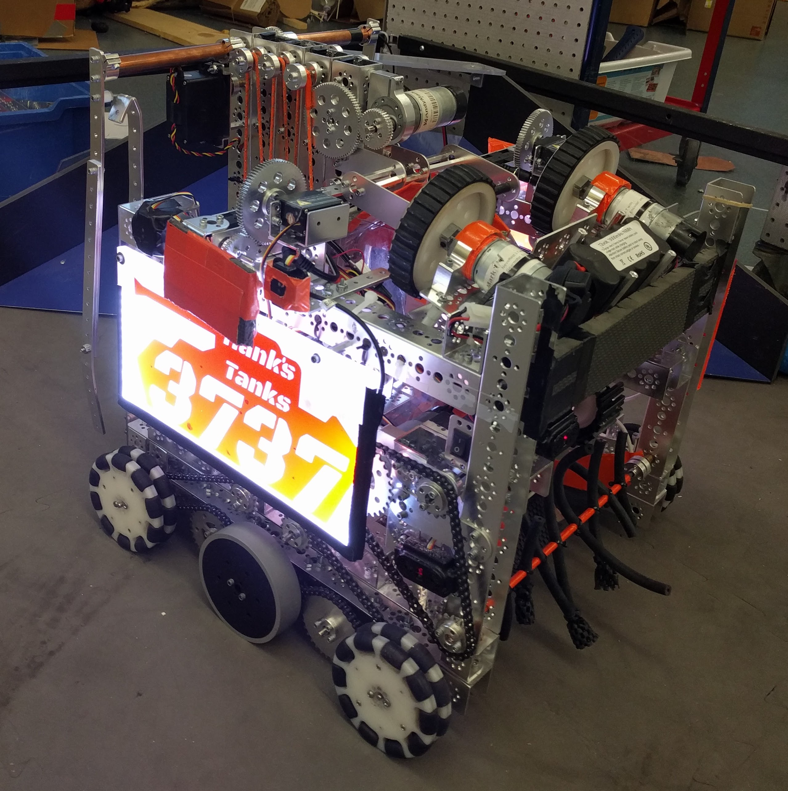

Final Robot
The robot we are using starting with our second Qualifier.
CAD
See the embedded full CAD model of our final robot. We create our model in PTC Creo.

Drive system
Our drive system uses 4 NeveRest 20 motors chained directly to 6 wheels, 2 grey stealth wheels and 4 omniwheels. With the stealth wheels in the middle on each side, and the omniwheels on the end, our robot has great traction, as well as incredibly fast turning. As Velocity Vortex is a fast game, the NeveRest 20 motors allow our robot to zip around the field much faster than would be possible with just NeveRest 40 motors. In order to keep all motors on track together, and minimize the space of the drive system, we use large sprockets on all motors and wheels, and chain them together in an over-under pattern. The large sprockets allow for sufficient contact between the chain and the sprockets, as well as more efficient use of space than other methods for chaining all the wheels and motors together on one side.
Button pusher
Our robot uses 2 continuous rotation servos geared 2:1 for speed to power rack-and-pinion button-pushers. Taking after the success of the button pusher on our preliminary robot, these two button pushers, one on each side of the robot, extend out from the side, allowing us to drive in a straight line and simply extend the rack and pinion for extremely fast and reliable button pushing.
Particle shooting system
Our ball shooting and collecting mechanism has two main stages, the collecting system and the shooting system. The collecting system has a wide harvester in the front to initially bring particles into our robot, and then a conveyor belt in a triangular shape with flaps, wide enough for one particle. This triangular shape makes the particles wrap around in a curved container, feeding them directly from the harvester into the shooting system. By running this system, geared 2:1 for speed, we are able to collect and hold up to 5 particles. Once we have collected as many particles as we can, we start up the shooting system, two parallel flywheels mounted on NeveRest 3.7 gear motors, and by running the collecting system at full speed, send all the particles through the flywheels accurately and quickly.
Cap ball lifter
Our cap ball system uses 4-stage rack-and-pinion as a linear slide system. Using a single NeveRest 60 motor geared 1:1 to power the pinion on the first stage, and then cascading slides to power the next 3, we are able to lift the cap ball over the vortex in a matter of seconds. For the 3 cascading stages, we take advantage of the racks and the slider blocks to create a lightweight and strong linear slide system. Using a copper pipe running through the last stage with forks clamped onto the ends, we pick up the cap ball with a forklift-like mechanism, and are able to hold it while we drive to the vortex and place it in.
